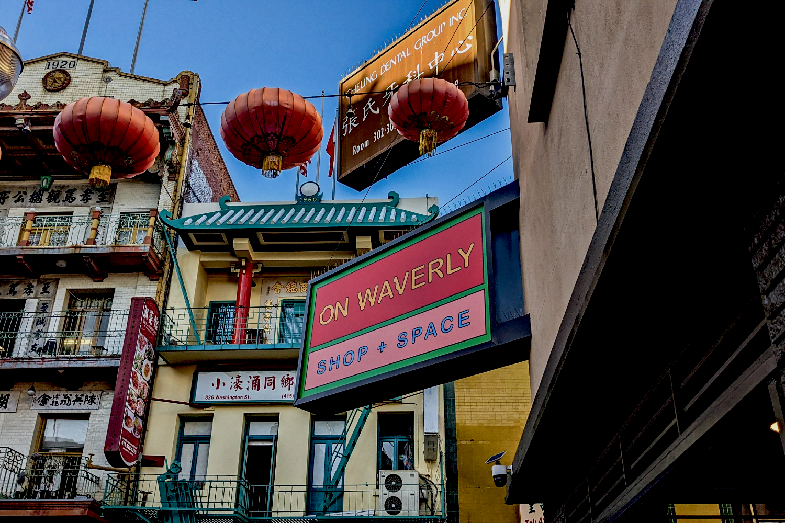
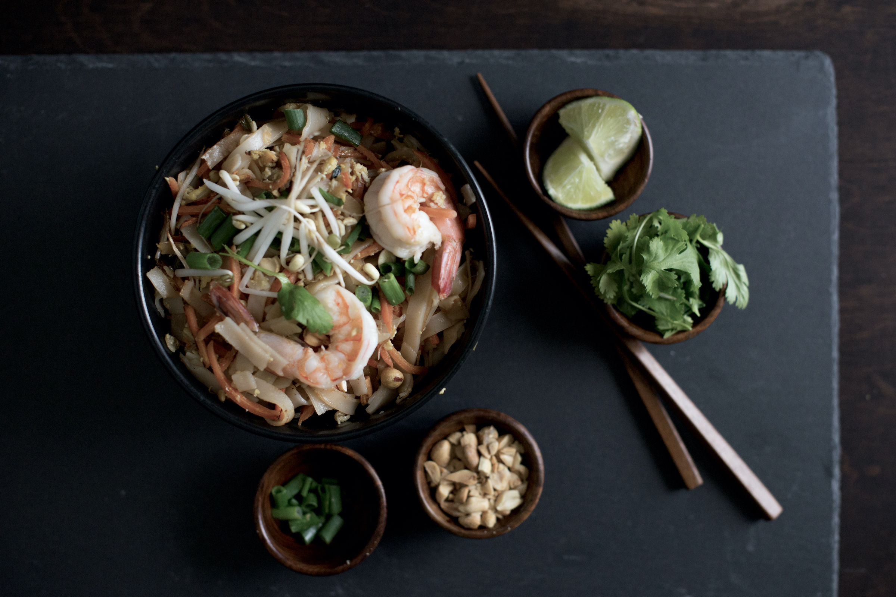
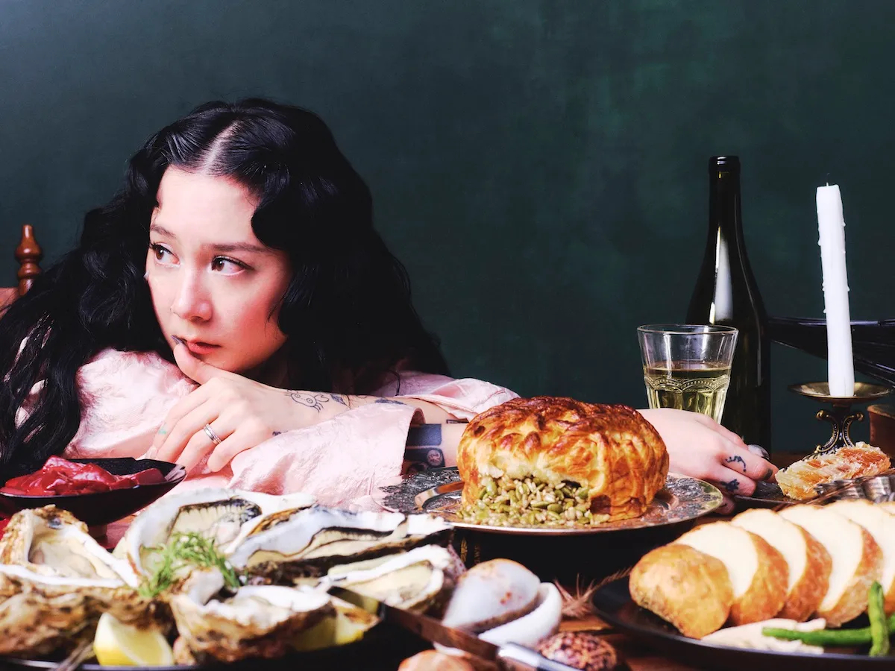
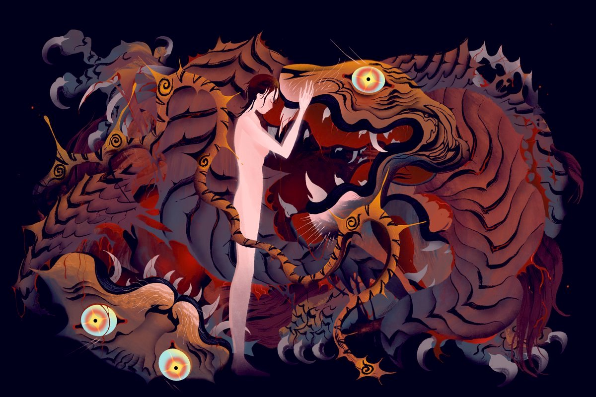

On Waverly: The Next Generation of San Francisco’s Chinatown.
Cynthia Huie, co-owner of On Waverly, weaves her background in retail and community development into a vibrant space for artists, authors, and community voices.
Tattoos by Low (Woocheol Choung) of Blindreason Tattoo NYC.
Explore a photo gallery of works by a rising tattoo artist in Asia America.

Why The Thai Food Scene Is Popping in NYC Right Now.
Thai food scene in New York City is huge and offers a variety of flavors. New restaurants are challenging the idea of “authentic” Thai cuisine.

Japanese Breakfast’s Michelle Zauner On the Nuances of Songwriting and Sorrow.
Catapulted from a world of well-earned indie street cred into the cultural mainstream by her bestselling memoir Crying In H Mart, Japanese Breakfast frontwoman and songwriter Michelle Zauner brings her band to the Santa Barbara Bowl on Saturday, August 23, as part of the tour for their critically praised For Melancholy Brunettes (& Sad Women) album.
Alysa Liu Shares Her Exhilarating, Exhausting Existence Ahead of Bay Area Homecoming Showcase.
Olympic gold medalist Alysa Liu is still getting used to being a celebrity as she returns to Bay Area to skate at SAP Center.

Isip Xin Explores the Joy of Being Asian American.
“Much of my work is rooted in being a queer Asian American. As a means of both self-expression and exploration, I investigate femininity, masculinity, beauty, and the body in my parents’ countries of origin. Being very disconnected from my parents’ experiences made for a nebulous identity that was difficult to grow up with. This same quality gave me the freedom to shape it as my own.”